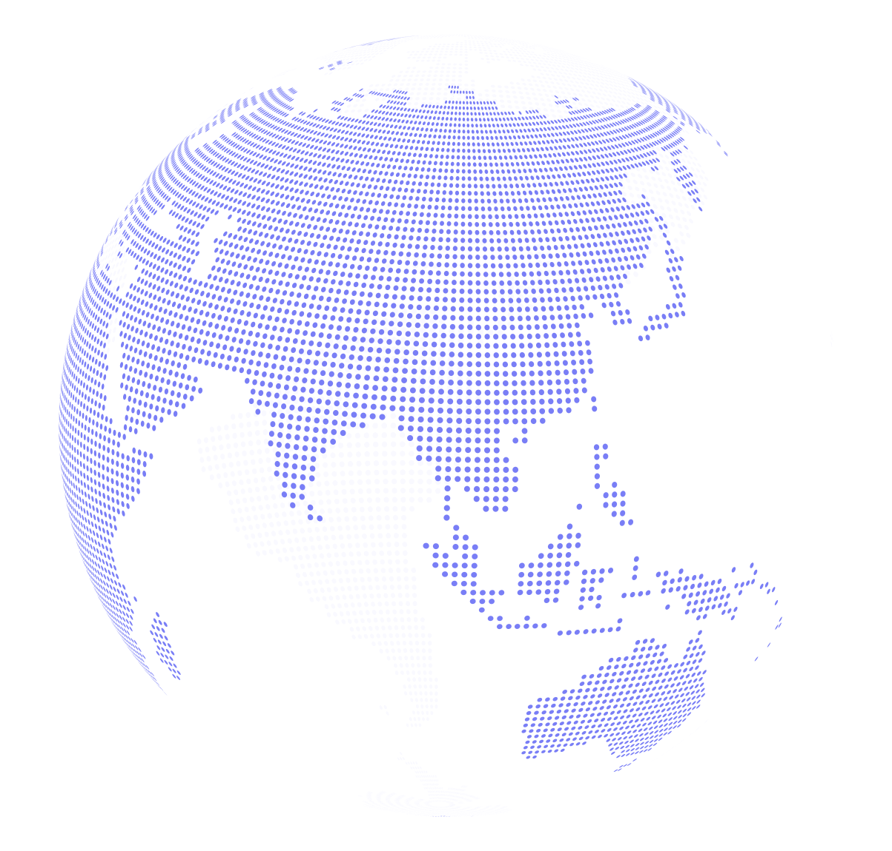

Akselerasi di Kawasan ASEAN
Sektor
Pada tahun 2019, negara-negara di kawasan ASEAN berada di tahap awal dalam menerapkan konsep Industri 4.0.
5 faktor penting dalam konsep Industri 4.0
Seberapa pentingkah sektor manufaktur di kawasan ASEAN?
Sebagai kawasan dengan tingkat perekonomian keenam terbesar di dunia pada tahun 2019, yaitu sekitar USD 3 triliun, ASEAN diperkirakan akan terus berkembang dengan tingkat pertumbuhan rata-rata sebesar 4,9% per tahun untuk satu dekade berikutnya. Sebagai motor utama pertumbuhan, sektor manufaktur turut menyumbang lebih kurang USD670 milyar atau 21% dari GDP kawasan ini pada tahun 2018.


Volume sektor manufaktur negara-negara ASEAN
terhadap GDP keseluruhan tiap negara di tahun 2018


Walaupun memiliki volume yang cukup besar, sektor manufaktur ASEAN hanya menempati posisi keempat di dunia setelah China, Amerika Serikat dan Jerman. Adapun mengenai tingkat produktivitas rata-rata, negara-negara di kawasan ASEAN kecuali Singapura berada di bawah Amerika Serikat dan Jerman.
Membandingkan tingkat produktivitas sektor manufaktur ASEAN
tingkat produktivitas manufaktur ditetapkan sebagai nilai tambah setiap karyawan yang diukur setiap ribuan USD sebagaimana tahun 2017
Keuntungan dari tingkat produktivitas sektor manufaktur
dari tahun 2008 sampai dengan 2017

Industri 4.0 menjanjikan perubahan melalui peningkatan nilai manufaktur suatu kawasan. Saat ini penerapannya masih jauh tertinggal dari China yang telah banyak melalukan investasi dalam automasi dan robot pada 10 tahun terakhir. Investasi tersebut terbukti meningkatkan produktivitas RRC sebesar 84%, berbanding hanya 38% secara rata-rata untuk kawasan ASEAN.
COVID-19 MUNCUL DAN SEMUANYA BERUBAH
Kebutuhan mendesak untuk melakukan
Transformasi
COVID-19 mendesak kebutuhan modernisasi operasional.
Ketergantungan sektor manufaktur pada proses dan operasional yang manual serta kurangnya pengetahuan yang mendalam akan rantai supply merupakan masalah yang nyata. Kedua faktor tersebut menghambat kemampuan produsen untuk merespon dengan cepat jika terjadi permintaan di luar perkiraan. Modernisasi sangat dibutuhkan agar produsen dapat segera pulih dari pandemi.
Secara singkat, COVID-19 dapat dikatakan semakin mendesak terjadinya transformasi di sektor manufaktur.

Tantangan yang dihadapi dalam penerapan
konsep Industri 4.0
Seiring mendesaknya penerapan konsep Industri 4.0, para produsen di kawasan ASEAN saat ini berlomba melakukan upgrade teknologi. Sebanyak 39% dari para produsen tersebut telah membangun sebuah nerve-centre, atau control-tower untuk meningkatkan transparansi rantai supply yang menyeluruh.
Sebanyak 25% dari seluruh program yang diterapkan adalah terkait dengan program automasi cepat untuk mengatasi kekurangan jumlah karyawan akibat COVID-19.
Walaupun laju perubahan yang terjadi hingga saat ini cukup menggembirakan, perubahan meraih konsep pabrik pintar atau smart factory sangat dipengaruhi oleh tiga masalah utama: data silos, kurangnya manajer dengan pengetahuan mumpuni dan ancaman keamanan siber.
Menurut penelitian IDC, data manufaktur sangat jarang tersimpan dalam satu penyimpanan data atau sistem, tetapi tersebar di beberapa tempat.
Para operator dan teknisi harus secara manual mencari informasi tersebut dari sistem yang berbeda melalui proses yang rumit dan menghabiskan banyak waktu– yang sering sekali menghambat inovasi serta kolaborasi dalam perusahaan.


Mengembangkan pabrik pintar dengan
LUMADA
Melihat masa depan sektor manufaktur ASEAN yang berpotensi besar, Hitachi mengambil langkah awal dengan mendirikan Lumada Centre di Thailand pada tahun 2018. Sebagai pusat layanan digital, Lumada bertujuan untuk melengkapi perusahaan-perusahaan di Asia Tenggara dengan keahlian IoT dan Analisis big data saat mereka memasuki era Industri 4.0.

Lumada merupakan wadah IoT yang memungkinkan Anda dan Hitachi secara bersama menciptakan solusi digital sesuai dengan kebutuhan bisnis Anda. Cara ini memberikan akses pada teknologi canggih dari Hitachi melalui analisis data yang kemudian digunakan sebagai nilai tambah pada proses operasional bisnis Anda dengan menerapkan analisis big data dan kecerdasan artifisial.
Dengan pengalaman luas dari kerja sama dengan banyak produsen. Hitachi paham bahwa konsep pabrik pintar dan analisis data dapat mengintimidasi banyak orang. Akan tetapi, banyak produsen yang semakin mampu menerima setelah mereka mengetahui lebih lanjut bahwa teknologi-teknologi baru dapat mengurangi biaya operasional, meningkatkan produktivitas dan pada akhirnya meningkatkan keuntungan.

Selain membantu penerapan pabrik pintar, Hitachi juga bertujuan membantu sektor logistik dengan penggunaan teknologi pintar pada seluruh sektor logistik dan jaringan pengirimannya.
Pada tahun 2019, Hitachi meluncurkan layanan bersama untuk kendaraan komersial di Thailand.
Melalui layanan ini, para pengusaha akan diuntungkan dengan penggunaan kendaraan di luar layanan yang efisien dan pengiriman kargo bersama untuk tujuan yang berdekatan.

Tidak puas dengan pencapaiannya saat ini, Hitachi terus mengembangkan kemampuan Lumada melalui kerja sama dengan beberapa mitra penelitian.
Melalui kerja sama dengan beberapa mitra penelitian, Hitachi mampu menawarkan solusi bagi produsen dalam tiga area.
Meningkatkan Produktivitas Produsen
Menganalisis data yang diperoleh dari lokasi pabrik untuk mengoptimalkan pengoperasian pabrik
Mengoptimalkan Logistik dengan Analisis Data
Menganalisis kemacetan lalu lintas, penyimpanan dan lokasi pengiriman untuk perencanaan rute yang pintar (smart routing), mempersingkat jarak tempuh dan mempercepat waktu pengiriman
Perawatan Berjadwal dan Bantuan Jarak Jauh
Melakukan perawatan berjadwal, bantuan jarak jauh secara real-time dan juga pelatihan jarak jauh bagi pekerja pada lini depan
Ingin mengetahui bagaimana Hitachi Smart Manufacturing dapat membantu Anda?
Klik pada salah satu kisah-kisah berikut untuk mengetahui lebih lanjut.